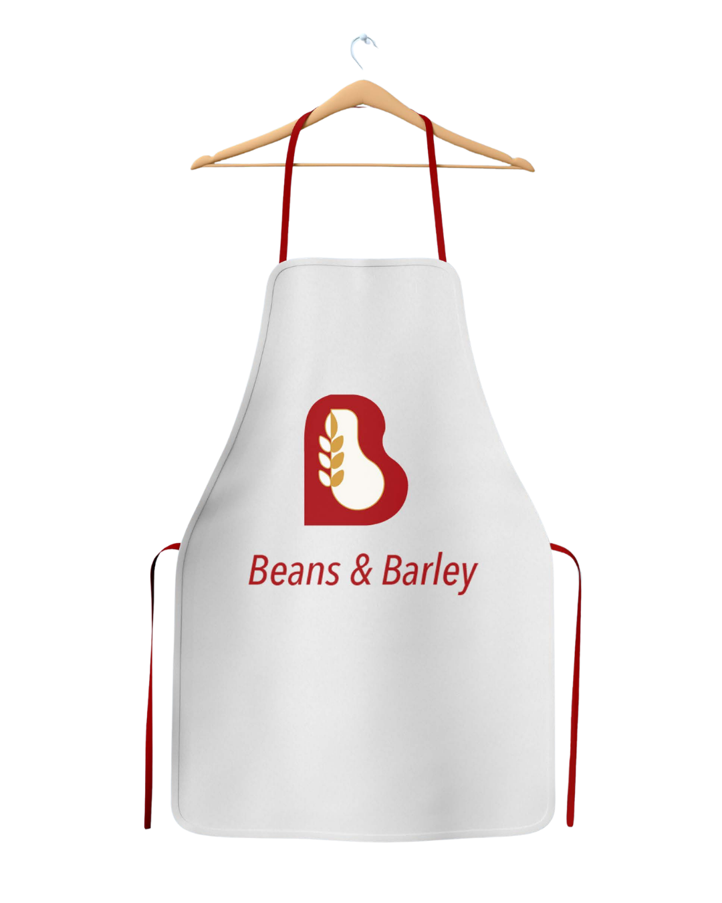
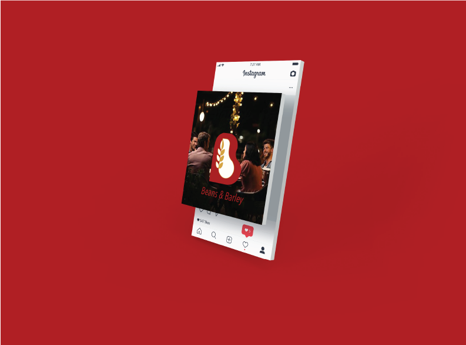

Packaging
All of the objects in this picture have the same brand narrative. Both the mug, the kraft takeaway bag, the packaging container, the package, and the business card have the same logo, the same red color, and the same immaculate white backgrounds. It seems like nothing is misplaced here. This uniformity ensures that no matter whether the customer sits indoors or leaves the cafe with his purchase, he will always remember the Beans & Barley brand.
Appron
The apron is where the brand connects most intimately with the people who make the food. Professional, but not stiff; welcoming, but not relaxed; white with red tie, with the logo centered on the bib. It demonstrates that the identity of Beans & Barley goes beyond the entryway and into the kitchen through the staff and each dish that emerges from it.


Restaurant Sign Board
This is how the brand is presented on a full-scale basis. The external signage is clean, powerful, and unmistakable, as the red logo and text on the white background suggest high quality and warmth from the first glance from outside. The open seats, large glass windows, and greenery inside make the place look welcoming. This picture illustrates how the brand Beans & Barley is more than just the logo, but an experience even before entering the place.

Social Media
Here’s an illustration of the way that Beans & Barley comes across on social media channels. The background color used is a very vivid red, which immediately gives the logo a very strong visual impact. The logo itself is superimposed perfectly on top of an authentic looking picture of people having a meal together, which demonstrates that the brand is just as successful online as it is offline.